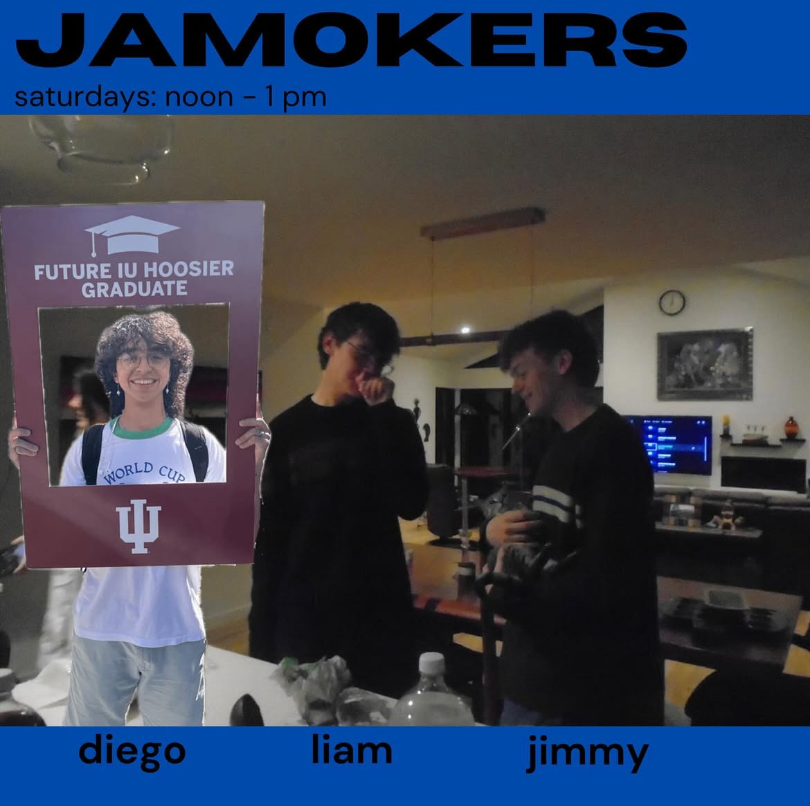
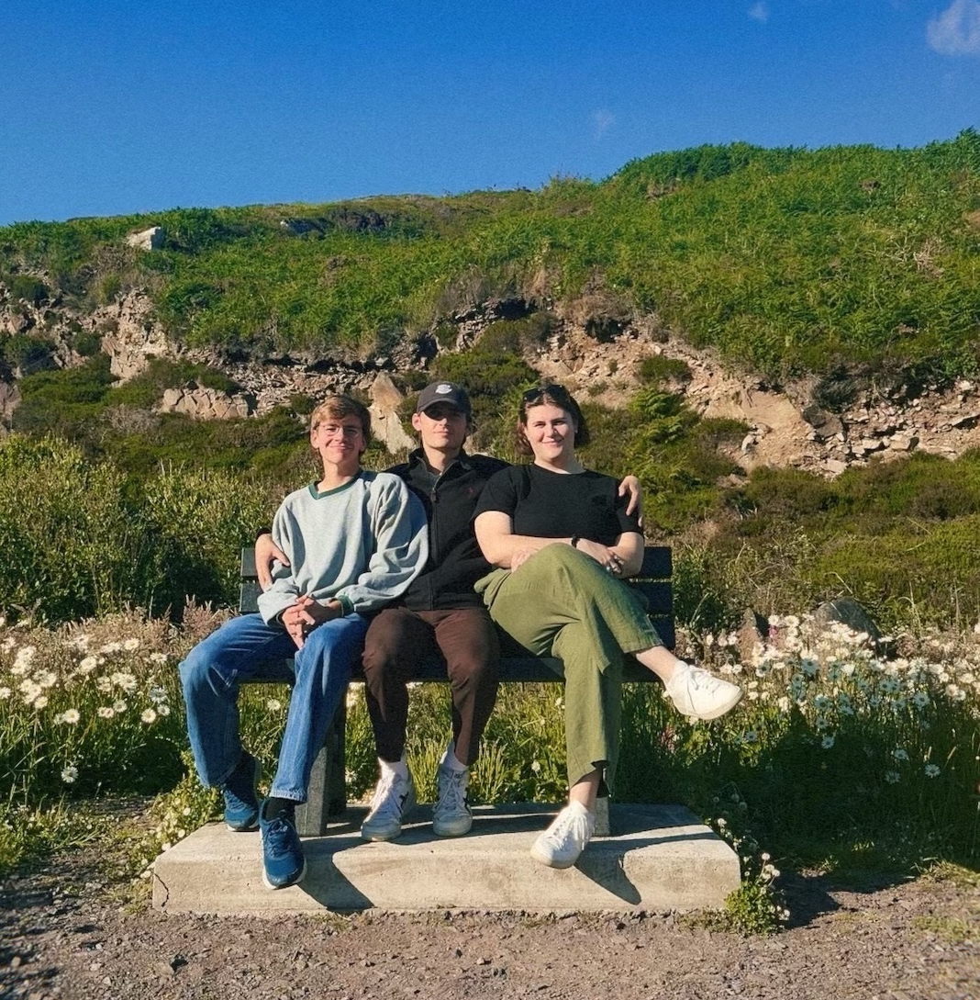
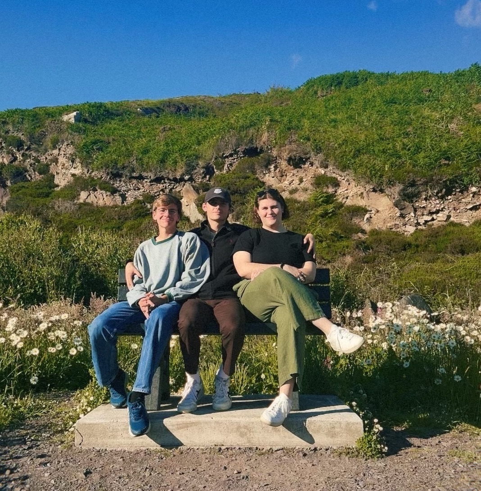

About Me
Freelance Consulting and Web Development
I worked as the principal developer with an artist and a member of the arts community that functioned as the creative director, to build a website to suit the needs of the local music community in Bloomington. We worked together closely through several iterations to ensure the client got the product that would make them most satisfied. It includes media from and about shows including pictures and blog posts, hosts articles written by creatives, and provides a calendar promoting events and giving artists and venues a way to connect with each other to more easily book shows. I plan to expand the website throughout this year to include a section for selling merchandise which I will receive a small commission for, and to allow for more users interaction including a place for comments and reactions. I hope to expand this to be able to work with other artists and help them fulfill their online presence needs. Check out the website!
Mobile App Development
I'm currently developing an app called RaveReview that will allow users to connect with each other and share experieneces they've had at concerts and live events. Shows, Venues, Tours, and Artists have ratings on a scale from 1-11, with users leaving individual reviews of their experience and pictures/short videos from the shows viewable by their friends and the entire app community. I'm developing the app in XCode using Swift with SwiftUI and the project is nearing completion, connected to Firebase, and is close to having full functionality.
J.M. DREW
Last summer I had the pleasure of interning for J.M. DREW LLC, an advising firm for Patient Access and Product Distribution for Specialty Pharmeceuticals and Healthcare. I analyzed and reported on trends in the Specialty Pharmeceuticals industry, and worked with fellow interns and professionals to deliver projects and presentations on my findings.
Catan A.I.
For my final project in an A.I. class I took, collaborating with 2 classmates using Github I developed a model that is able to make intelligent decisions in the game of Catan. We used a forward checking n-max algorithm that achieved significant success against bots and human players, with a 95% win rate against random bots and significantly higher average points earned in a game. Our model differs from others online by implementing trading and smart decision making for the first two(settlement) rounds. This allows for a more complete playthrough of the game whereas others focus on just the main game rounds and many without trading. We tested our A.I. player using a model we adapted from one online on another github project. This project was based on a similar idea, but we made sure to differ ours from theirs as mentioned above. See my team's full project and report on my github. If you'd like to play/watch it yourself download the files on my github and run HumanGame.py or BotGame.py depending on whether you want to play or not. Watch it play a game agains random bots below! It's one quick game but you can see that our player (Red) makes much more intelligent structures than the bots and prioritizes game mechanics that maximize points: Longest Road, Largest Army, and building settlements tactically for the most rolls and resources.
Burkina Faso Data Analysis Project
For a Data Mining & Analytics class that I took Junior year, I had a lot of freedom to decide what my final project would be. I chose to analyze how effective humanitarian and developmental aid packages had been to the development of Burkina Faso. I mined data for markers of a country's development such as literacy, maternal mortality, life span, and GDP, and analyzed the correlation their change had with humanitarian and developmental aid spending. This was especially challenging because of the lack of good data in Burkina Faso, but I ended with a final project I was very proud of. Check it out on my github or download it below!
W.I.U.X. Student Radio
Telecast Zine
I regularly write an Album Review column for The Telecast Zine, W.I.U.X.'s student mini magazine. Telecast gathers art and media from a lot of the creative and arts community in Bloomington and puts it all together. I've had the pleasure of contributing through a column where I review my favorite new albums. Check out some of my reviews below!
My Radio Show
Along with the Zine and helping with events, I host a radio show with two cohosts every Saturday from 12pm-1pm. We play our favorite songs we've been listening to each week and talk about them and with each other. We've met a lot of cool people from being involved with student radio.
Music Industry Creatives (M.I.C.)
M.I.C. is a club at I.U. whose goal it is to connect local musicians with audiences. They provide musicians with resources, build community among music listeners in Bloomington, and host music festivals and events. I've helped to produce these events and volunteer regularly at their yearly festival.


 
